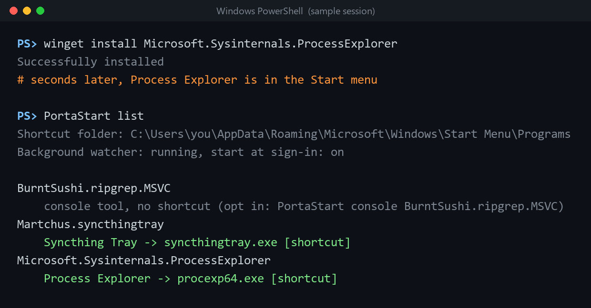

winget's portable packages (Process Explorer, Syncthing Tray and many more) never get a Start menu entry. PortaStart adds one for every GUI app, keeps them in sync as you install, upgrade and uninstall, and never touches anything else.

Sample session. Console tools like ripgrep stay off the Start menu.
For a portable package, winget unzips the program into a folder and puts a symlink on your PATH. Great for rg, useless for a GUI app: Win + typing the name finds nothing, and launchers that index the Start menu (PowerToys Run, Flow Launcher) can't see it either. Pointing the Start menu at winget's Links folder doesn't work, because the Start menu ignores symlinks. People have asked for this in winget-cli#2299 since 2022.
A tiny background watcher notices when winget changes its install records and adds, fixes or removes shortcuts within about 5 seconds. No window, no tray icon.
Reads each exe's header: GUI programs only, no uninstallers or updaters, and the x64, ARM64 or x86 build that matches your PC.
Never touches shortcuts it didn't make, skips apps that already have one, and a shortcut you delete stays deleted.
"Process Explorer", not "procexp64". Shortcuts go at the top level of Start, or in a folder you choose.
Everything goes in your own Start menu, even for machine-wide packages. It doesn't need elevation for anything.
PortaStart remove-all removes every shortcut it made and stops the watcher.
winget records every portable install in the Uninstall registry key (the same data winget list uses) with the exe it installed and its folder. PortaStart reads that and nothing else.
| Package | Shortcut | Example |
|---|---|---|
| Single GUI exe | That exe, named after the package | A portable editor or utility |
| Zip with several builds | The build for your CPU, named like the package | Process Explorer → procexp64.exe on x64, procexp64a.exe on ARM64 |
| Zip with a GUI and a CLI | The GUI program only | Syncthing Tray → syncthingtray.exe, not syncthingtray-cli.exe |
| Console tool | None, unless you run PortaStart console <id> | ripgrep, fd, jq |
| Already has a Start menu shortcut | None: it leaves it alone | An app you also installed some other way |
| Uninstalled with winget | Its shortcut is removed |
%LOCALAPPDATA%\Programs\PortaStart.PortaStart in a terminal. It creates shortcuts for the portable apps you already have and starts watching for new ones.PortaStart list any time to see what got what.PortaStart sync | Sync once (add --dry-run to preview) |
PortaStart list | Your portable packages and their shortcuts |
PortaStart exclude <id> | Keep a package out of Start |
PortaStart include <id> | Undo that, or bring back a deleted shortcut |
PortaStart folder "WinGet" | Put the shortcuts in a folder |
PortaStart autostart off | Stop the background watcher |
PortaStart remove-all | Undo everything |
PortaStart self-test | Fake some installs and check it all works |
No. Every 3 seconds it reads a few registry timestamps (0 ms of CPU over an idle minute in testing). When winget installs, upgrades or removes something, it syncs once winget has been quiet for two seconds, so a new app shows up in Start about 5 seconds after winget install finishes. It uses about 20 MB of private memory and runs with no window (conhost --headless), started from your Run key at sign-in.
PortaStart doesn't add a shortcut for an exe that already has one in the Start menu, so the two won't double up for new installs. PortaStart remove-all cleans up its own.
--scope machine)?Yes. It reads those too, and puts their shortcuts in your own Start menu, so it never needs admin rights.
Those already create their own shortcuts, so PortaStart ignores them. It only acts on winget's portable installs.
For apps you install through Winhance, yes: since January 2026 the Winhance tweaking suite creates a Start menu folder with shortcuts to every exe in a portable package it installs. PortaStart works with plain winget (the commands you type, scripts, other front ends), picks the main program instead of every exe, and removes the shortcut when you uninstall.
%LOCALAPPDATA%\PortaStart: the list of shortcuts it made (only those are ever changed or removed), your settings, and a short log. It makes no network connections.
Start menu entries for portable packages are one of winget's long-standing open requests, and the winget team has explained why it's hard to build into winget itself (manifest format, opt-in vs opt-out, upgrade behaviour). A separate, opt-in tool doesn't have those problems.